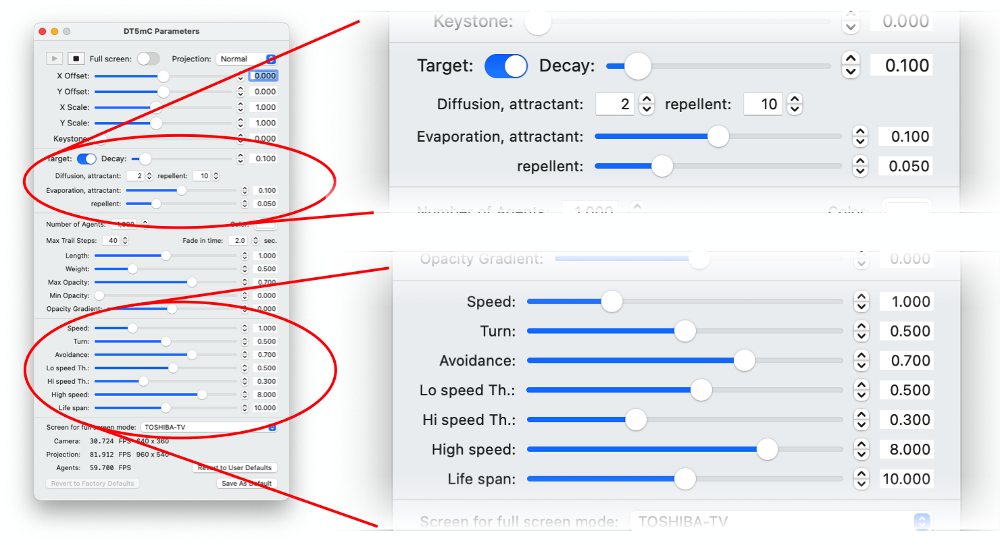

Controls for movement parameters.
You can modify the movement of swarm by the following four parameters:
- Speed: velocity magnitude of agents in target area.
- Turn: turning angle.
- Avoidance: weight of repellent force for integration with attraction force.
- Hi speed th.: upper threshold of attractant's density for agent into high speed exploration.
© Tatsuo Unemi, 2023.